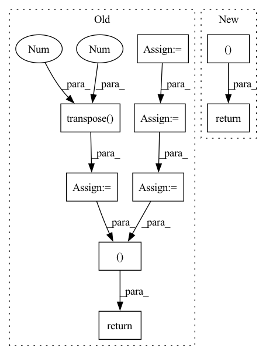

Pattern ID :17910
Before Change
n_chan_out = min(n_chan_ref, n_chan_est)
if n_chan_ref > n_chan_est:
SDR = SDR.transpose(-2, -1)
SIR = SIR.transpose(-2, -1)
SAR = SAR.transpose(-2 , -1 )
SIR_npy = SIR.cpu().detach().numpy()
SDR_out = SDR.new_zeros(b_shape + (n_chan_out,))
SIR_out = SIR.new_zeros(b_shape + (n_chan_out,))
SAR_out = SAR.new_zeros(b_shape + (n_chan_out,))
p_opts = np.zeros(b_shape + (n_chan_out,), dtype=np.int64)
for m in np.ndindex(b_shape):
dum, p_opt = _linear_sum_assignment_with_inf(-SIR_npy[m])
SDR_out[m] = SDR[m + (dum, p_opt)]
SIR_out[m] = SIR[m + (dum, p_opt)]
SAR_out[m] = SAR[m + (dum, p_opt)]
p_opts[m] = p_opt
p_opts = pt.from_numpy(p_opts).to(SDR_out.device)
return SDR_out, SIR_out, SAR_out, p_opts
def _linear_sum_assignment_with_inf(
cost_matrix: np.ndarray,After Change
p_opts[m] = p_opt
if return_perm:
return (loss_outIn pattern: SUPERPATTERN
Frequency: 3
Non-data size: 9
Instances Fragment ID: 58804609
Project Name: fakufaku/torchiva
Commit Name: d2b2bceef6944715a6274920e6ec7b0374367ccd
Time: 2022-01-31
Author: robin.scheibler@linecorp.com
File Name: torchiva/metrics.py
M Class Name: AnonimousClass
N Class Name: AnonimousClass
M Method Name: _solve_permutation(1)
N Method Name: _solve_permutation(3)
M Parent Class:
N Parent Class:
M File Name: torchiva/metrics.py
N File Name: torchiva/metrics.py
M Start Line: 204
M End Line: 234
N Start Line: 150
N End Line: 182
Before Change
w = w_1 / w_2
out = torch.matmul(w.transpose(1 , 2 ) , encoder_outputs)
return out, w
class DurationPredictor(nn.Module):
Duration Parameter Predictor After Change
c = c.unsqueeze(2)
s = self.range_param_predictor(encoder_outputs, duration, mask).unsqueeze(-1)
g = torch.distributions.normal.Normal(loc=c, scale=s)
w = self.get_alignment_energies(g, t) // [B, L, T]
if mask is not None:
w = w.masked_fill(mask.unsqueeze(-1), 0.0)
attn = w / (torch.sum(w, dim=1).unsqueeze(1) + 1e-8) // [B, L, T]
out = torch.bmm(attn.transpose(1, 2), encoder_outputs)
return out, attn
class DurationPredictor(nn.Module):
Duration Parameter Predictor Fragment ID: 58804752
Project Name: keonlee9420/wavegrad2
Commit Name: 523ec241c64ab635218f32d071fd85fbc469e178
Time: 2021-07-13
Author: keonlee9420@gmail.com
File Name: model/modules.py
M Class Name: GaussianUpsampling
N Class Name: GaussianUpsampling
M Method Name: forward(4)
N Method Name: forward(4)
M Parent Class: nn.Module
N Parent Class: nn.Module
M File Name: model/modules.py
N File Name: model/modules.py
M Start Line: 115
M End Line: 135
N Start Line: 120
N End Line: 134
Before Change
self.ap = None
def __getitem__(self, index):
transcript = self.path_to_transcript_dict[self.key_list[index]]
path = self.key_list[index]
wave, sr = sf.read(os.path.join("Corpora/CSS10/", path))
if self.ap is None:
self.ap = AudioPreprocessor(input_sr=sr, output_sr=16000, melspec_buckets=80, hop_length=256, n_fft=1024)
text = self.tf.string_to_tensor(transcript).long()
text_len = torch.LongTensor([len(text)])
speech = self.ap.audio_to_mel_spec_tensor(wave).transpose(0 , 1 )
speech_len = torch.LongTensor([len(speech)])
if self.spemb:
print("not implemented yet")
raise NotImplementedError
return text, text_len, speech, speech_len
def __len__(self):
return len(self.key_list)
After Change
raise NotImplementedError
def __getitem__(self, index):
return self.cached_text[index], \
self.cached_text_lens[index], \
self.cached_speech[index], \
self.cached_speech_lens[index]
def __len__(self):
return len(self.cached_text_lens)
Fragment ID: 58804645
Project Name: digitalphonetics/ims-toucan
Commit Name: 51675d8bba9cee446d9fe520fde5253af397c61d
Time: 2021-02-23
Author: florian.lux@ims.uni-stuttgart.de
File Name: TransformerTTS/TransformerTTSDataset.py
M Class Name: TransformerTTSDataset
N Class Name: TransformerTTSDataset
M Method Name: __getitem__(2)
N Method Name: __getitem__(2)
M Parent Class: Dataset
N Parent Class: Dataset
M File Name: TransformerTTS/TransformerTTSDataset.py
N File Name: TransformerTTS/TransformerTTSDataset.py
M Start Line: 32
M End Line: 44
N Start Line: 54
N End Line: 57